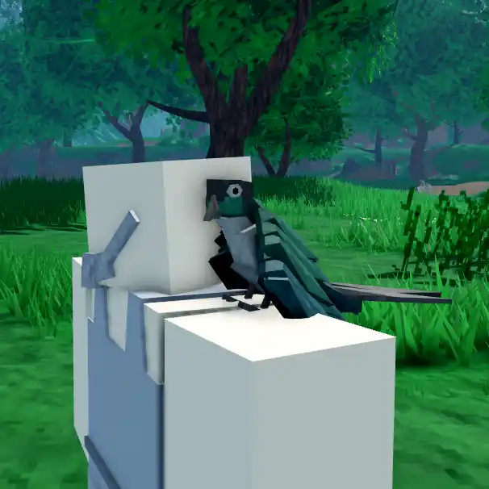
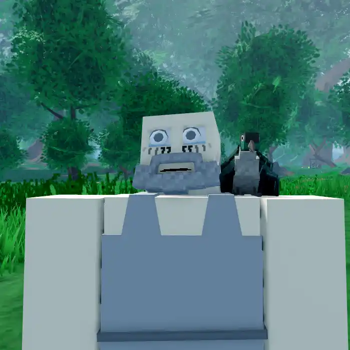
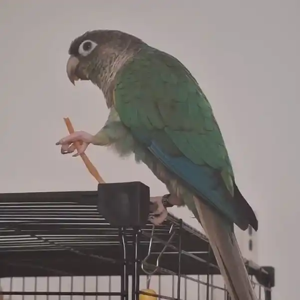
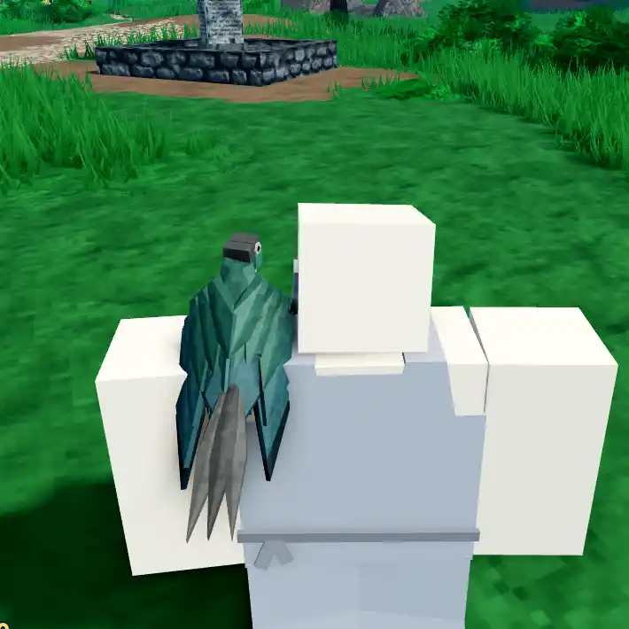
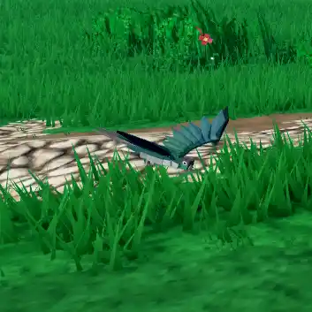
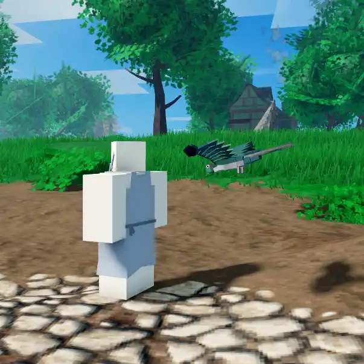
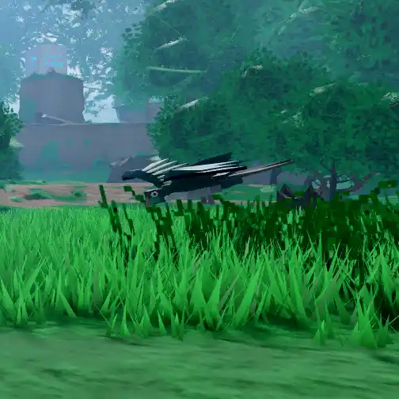
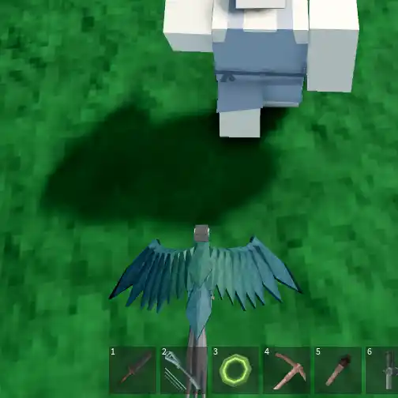

Bojji

Info
Slot: Accessory
Recolorable?: No
Unique Colors: None
Particle Effects: None
Sound Effects: Yes
Owner: TheRisingTides / Tid
Appearance & Effects
In-game description: best bird
Bojji appears to be a bird, specifically a Green-Cheeked Parakeet (or Green-Cheeked Conure) with a semi-turqoise mutation. Bojji will sit on the player's left shoulder while idle. When the player moves, Bojji will spread his wings and fly to follow the player around. Bojji will periodically make chirping noises, making it one of the few relics to have sound effects, the others being Tusk and Zoopa's Harp.
Inspiration
Bojji was inspired by the developer Tid's pet bird in real life, whose name is also Bojji. The in-game Bojji was modeled to be the same species and have the same colors as the real one. The sound effects are direct samples of Bojji's real chirps.

Bojji sitting on the player's shoulder

Front view of Bojji
Gallery

The real Bojji

Bojji from the back

Bojji flying

Bojji following the player

Another angle of Bojji flying

Bojji flying from above